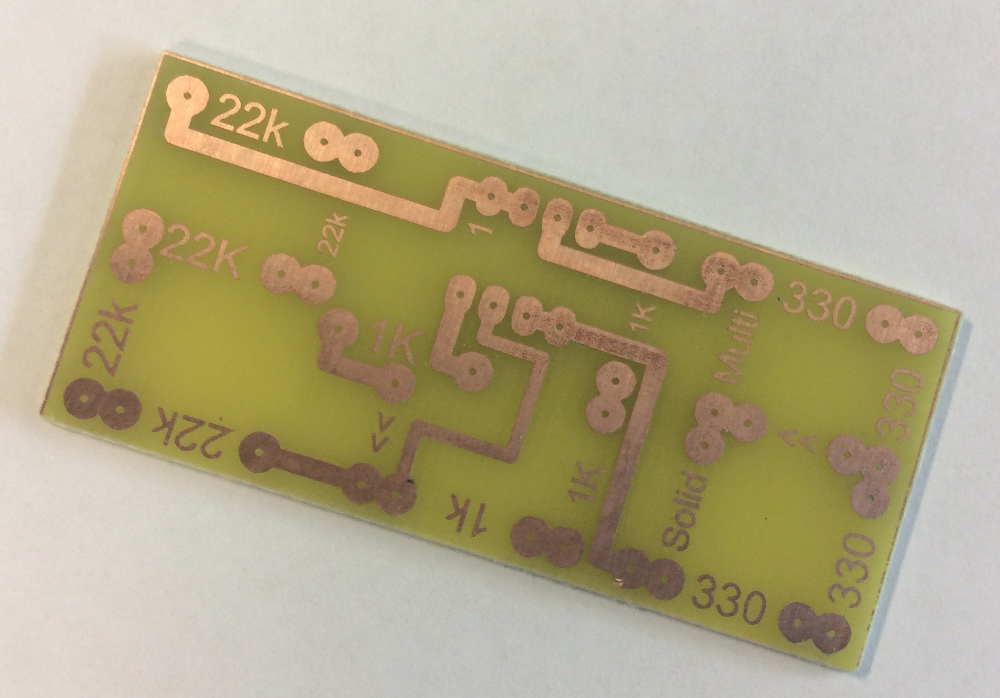
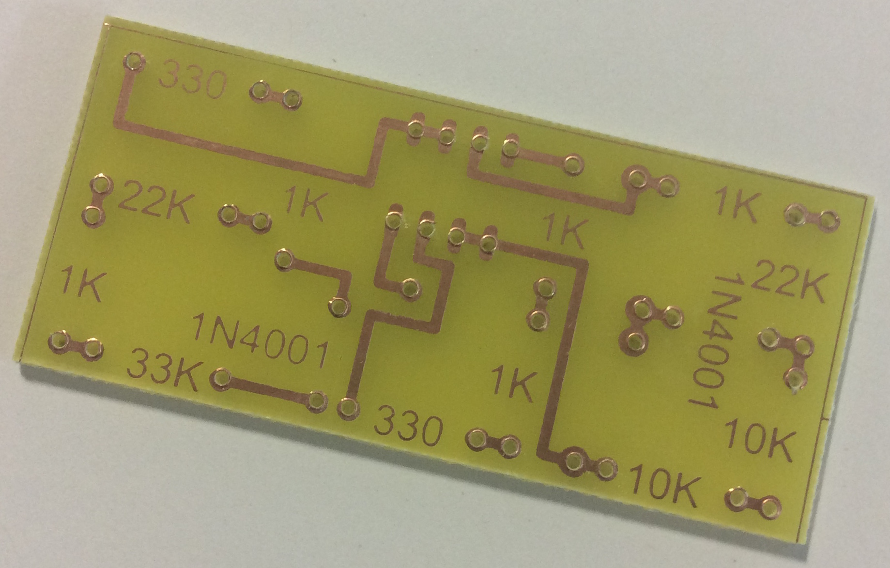
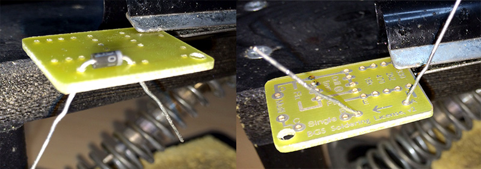

The Soldering License
Table of Contents
1 Introduction
Drill it
- Before you can create the next Martian lander, we'll need to cover some basics on soldering, component identification and multimeter usage.
- Around three quarters of the problems students have with their circuits are down to poor soldering, or inserting components incorrectly.
- This project will help you develop these skills, and at the end, you'll have a PCB which you can use to show how good you are at soldering neatly.
- Before you begin, pick up a copy of the task sheet from here, and save it in your H: drive, in your S&C folder. You'll need to regularly update this as you progress through the project.
- Once you've gotten your soldering license PCB from your teacher, the first thing to do is to drill a 3mm hole in the bottom-left corner pad, using a pillar drill…

- Then, using a 1mm drill-bit in one of the precision drills, drill out all the other pads on the PCB. Take care to drill through smoothly, and try to get as close to the centre of all the pads as possible. This will make things much easier for you when you start soldering if you do this well.

Solder it
- Time to solder your first component. Plug a soldering iron in, ensure you're wearing an apron and goggles and that any long hair is tied back. The iron will take about 5 minutes to warm up.
- Wet the sponge under the tap, and wring it out, so it's damp but not dripping.
- Take a Rectifier diode from the component trays, and look at it closely. Some components need to be inserted a certain way round, like this diode, which only allows electric current to flow through it in one direction.
- The grey band on one end is like an arrow-head, indicating the direction of current-flow. There's also an arrow on the PCB between two of your holes. This is where the diode needs to go.
- When soldering, the top of the board (the side with nothing on it) is called the "Component side", and is where all your components will sit when you're finished.
- The side with all the shiny tracks and pads drawn on it is called the "Solder side", and is the side we apply solder to.
- Place your diode through the holes, so that the grey band points the same way as the arrow-head, then bend the legs of the component out at about 45 degrees. This will stop the component from falling out fo the board when you solder it.
- DON'T LAY THE LEGS DOWN FLAT AGAINST THE BOARD.

- The aim of soldering is to join two metals together; in this case, the metal on the pad on the PCB and the component leg. To achieve this, both surfaces must be heated up for a few seconds, then solder can be melted which will flow on to both metals.
1 Place the tip of the soldering iron so that it is touching both the pad and the component leg. There is a flat edge on most irons which can be pushed against the leg, so that the very tip of the iron can make contact with the pad.
2 Count 3 seconds in your head, then (keeping the soldering iron in place) feed in a small amount of solder at the tip of the soldering iron. As long as the pad and leg are hot, the solder should flow oto the PCB nicely.
3 Slowly remove the solder, then slowly remove the soldering iron, in that order. There should be a neat "mountain" of solder covering both the pad and the leg. The hole inthe PCB should no longer be visible.
4 Use a side-cutter to remove the excess leg sticking out of the board. Picture 4 shows a couple more components placed, too - we'll add these in a moment.

2 All about resistors
Learn it
- Resistors are probably the most commonly used components in our projects. The purpose of a resistor is to reduce the flow of electrical current in a circuit. They can be set up to reduce the voltage too, but we'll look at that in another module.
- Resistance is measured on Ohms - the larger the number of Ohms, the less current can flow through a circuit.
- As the components are small, engineers realised a long time ago that writing the value of the resistor on the component wasn't practical, so instead they developed a system using coloured bands. We'll look at this now.
- When you hold a resistor in your hand, have the gold band facing right. The gold band indicates that these are high-quality resistors, which are accurate to +/-5%. If they had a silver band, they'd only be +/-10%.
- The colour scheme more or less follows the colours of the rainbow, but with some quirks.
| Colour | Value |
|---|---|
| Black | 0 |
| Brown | 1 |
| Red | 2 |
| Orange | 3 |
| Yellow | 4 |
| Green | 5 |
| Blue | 6 |
| Purple | 7 |
| Grey | 8 |
| White | 9 |
- I use a mnemonic to help me remember: "Bloody, Broken Richard Of York Gave Battle Purple"
- (You very rarely see grey and white banded resistors)
- To read a resistor, you start by writing down the value for the left-most coloured band.
- You then write the value of the next coloured band next to it.
- The third band tells you how many zeros to write after that. Let's do some examples…
- Orange (3), Orange (3), Brown (0), Gold - 330 Ohms
- Brown (1), Black (0), Yellow (0000), Gold - 100000 Ohms
- People recognised that sometimes, it'd be nice to have a shorthand to avoid writing out lots of zeros.
- Rather than writing a number like 10,000, electronic engineers tend to knock off the last 3 zeros and write 10k instead.
- Rather than writing 2200, people can also write 2k2. You'll see this quite a bit when you look at the component racks in the classroom.
- In the next step, we'll add resistors.